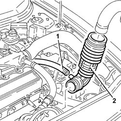
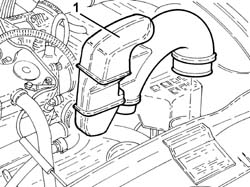
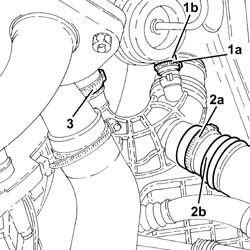
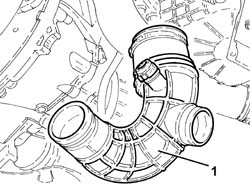
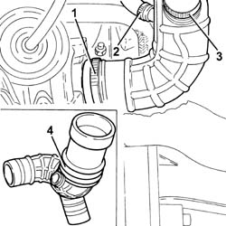
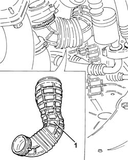

1048A54 sleeve to turbocharger - r r
- Path
- Procedures > 10 ENGINE > 1048 ENGINE AIR SUPPLY CIRCUIT > 1048A vacuum air circuit > 1048A54 sleeve to turbocharger - r r
- Kind
- repair procedure (removal / refitting; the operation number is the code)
- Applies to
- engines: 1.9 JTD 8v , 1.9 JTD 16v, 2.4 JTD 10v, 2.4 JTD 20v; all production periods
- Interactive page
- https://sloeber94.github.io/elrnDB-a156/en/#/3237785
Applies to: engines: 1.9 JTD 8v , 2.4 JTD 10v; all production periods
 Removing
Removing
 Refitting
Refitting1048A50 air inlet pipe to turbo charger - r + r
1. Disconnect the oil vapour recovery pipe from the air inlet hose between the rigid air inlet pipe and the turbocharger.
2. Disconnect and remove the air inlet sleeve between the rigid air inlet pipe and the turbocharger from the turbocharger.

Applies to: engines: 1.9 JTD 8v , 2.4 JTD 10v; all production periods
Refitting
RemovingFit and connect the air inlet sleeve between the rigid air inlet pipe and the turbocharger to the turbocharger.
Connect the oil vapour inlet pipe to the air inlet sleeve between the rigid air inlet pipe and the turbocharger.
Applies to: engines: 1.9 JTD 8v ; all production periods; only with equipment: Euro 3
Removing
RefittingPosition the vehicle on the ramp.
Proceed with the removal 1016A10 sound-proofing cover - r + r .
1. Loosen the bands and remove the air intake pipe to the turbocharger with built-in resonator.

Applies to: engines: 1.9 JTD 8v ; all production periods; only with equipment: Euro 3
Proceed with the removal 7055B54 under-engine guard - r r .
1. Loosen the band (1a) and disconnect the oil vapour recirculation pipe (1b) from the turbocharger air intake hose.
2. Loosen the band (2a and disconnect the pipe for the resonator (2b) from the turbocharger air intake hose.
3. Loosen the band for the turbocharger air intake hose, turbocharger side.

Applies to: engines: 1.9 JTD 8v ; all production periods; only with equipment: Euro 3
1. Remove the turbocharger air intake hose.

Applies to: engines: 1.9 JTD 8v ; all production periods; only with equipment: Euro 3
Refitting
RemovingPlace the turbocharger air intake hose back in its housing and tighten the band.
Connect the pipe for the resonator to the turbocharger air intake hose and tighten the band.
Connect the oil vapour recirculation pipe to the turbocharger air intake hose and tighten the band.
Proceed with the refitting 7055B54 under-engine guard - r r .
Refit the turbocharger air inlet pipe with built-in resonator in its seating and secure using bands.
Proceed with the refitting 1016A10 sound-proofing cover - r + r .
Remove the car from the ramp.
Applies to: engines: 2.4 JTD 10v; all production periods; only with equipment: Euro 3
Removing
RefittingPosition the vehicle on the ramp.
Proceed with the removal 1016A10 sound-proofing cover - r + r .
Proceed with the removal 1048A50 air inlet pipe to turbo charger - r + r .
Proceed with the removal 7055B54 under-engine guard - r r .
1. Loosen the band (1a) and disconnect the oil vapour recirculation pipe (1b) from the turbocharger air intake hose.
2. Loosen the band (2a and disconnect the pipe for the resonator (2b) from the turbocharger air intake hose.
3. Loosen the band for the turbocharger air intake hose, turbocharger side.
Applies to: engines: 2.4 JTD 10v; all production periods; only with equipment: Euro 3
1. Remove the turbocharger air intake hose.
Applies to: engines: 2.4 JTD 10v; all production periods; only with equipment: Euro 3
Refitting
RemovingPlace the turbocharger air intake hose back in its housing and tighten the band.
Connect the pipe for the resonator to the turbocharger air intake hose and tighten the band.
Connect the oil vapour recirculation pipe to the turbocharger air intake hose and tighten the band.
Proceed with the refitting 7055B54 under-engine guard - r r .
Proceed with the refitting 1048A50 air inlet pipe to turbo charger - r + r .
Proceed with the refitting 1016A10 sound-proofing cover - r + r .
Remove the car from the ramp.
Applies to: engines: 1.9 JTD 16v; all production periods
Removing
RefittingPosition the vehicle on the ramp.
Proceed with removal 1016A10 sound-proofing cover - r + r .
Proceed with removal 1048A50 air inlet pipe to turbo charger - r + r .
1. Loosen the band and disconnect the the turbocharger air inlet hose from the rigid pipe, turbocharger side.
2. Loosen the band and disconnect the oil vapour recirculation pipe from the turbocharger air intake hose.
3. Loosen the band and disconnect the sleeve between lower resonator and air intake sleeve to the turbocharger, turbocharger intake sleeve side.
4. Remove the turbocharger air inlet hose from the rigid pipe.

Applies to: engines: 1.9 JTD 16v; all production periods
Refitting
RemovingRefit the turbocharger air intake sleeve from the rigid pipe.
Connect the sleeve between lower resonator and turbocharger inlet sleeve, turbocharger inlet sleeve side and tighten the collar.
Connect the oil vapour recirculation pipe, turbocharger air intake sleeve side and tighten the band.
Connect the air intake sleeve to the rigid sleeve, turbocharger side, and tighten the band.
Proceed with refitting 1048A50 air inlet pipe to turbo charger - r + r .
Proceed with refitting 1016A10 sound-proofing cover - r + r .
Remove the car from the ramps.
Applies to: engines: 2.4 JTD 20v; all production periods
Removing
RefittingPosition the vehicle on the ramp.
Proceed with removal 1048A50 air inlet pipe to turbo charger - r + r .
1. Loosen the band and remove the air inlet hose to the turbocharger from the rigid pipe.

Applies to: engines: 2.4 JTD 20v; all production periods
Refitting
RemovingRefit the air inlet hose to the turbocharger from the rigid pipe and secure it with its band.
Proceed with refitting 1048A50 air inlet pipe to turbo charger - r + r .
Remove the car from the ramps.
Topics linked from this page (3)
- 1016A10 sound-proofing cover - r + r
- 1048A50 air inlet pipe to turbo charger - r + r
- 7055B54 under-engine guard - r r